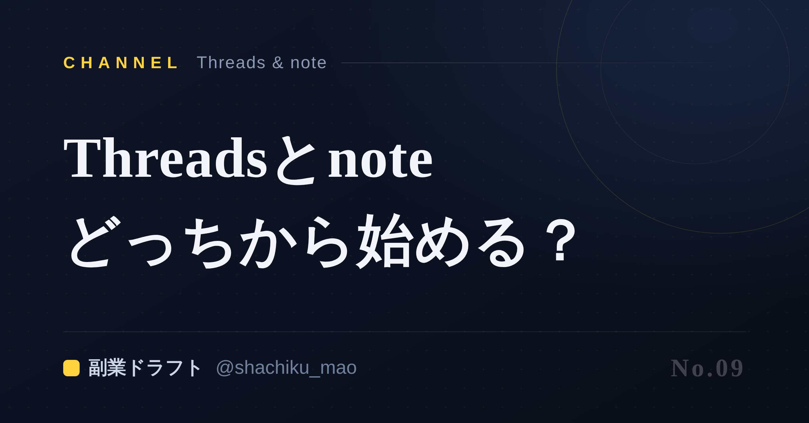
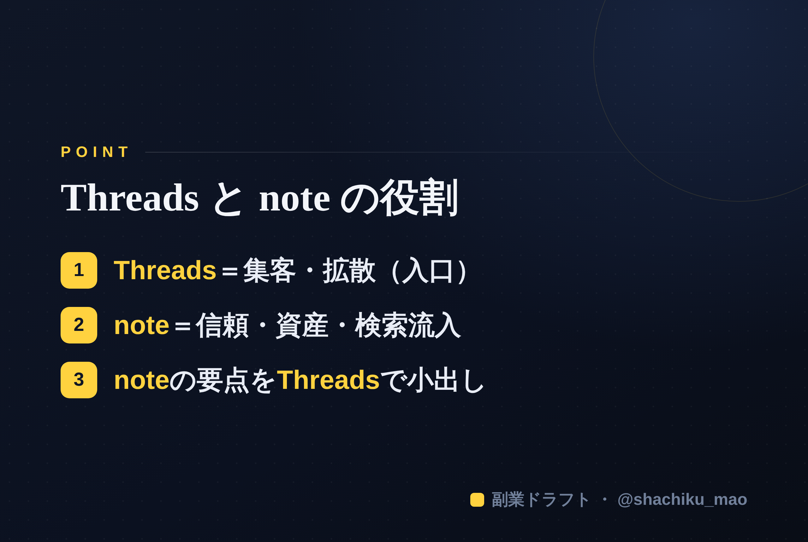

使い方
1. 「タイトルをコピー」→ note のタイトル欄に貼る
2. オレンジのラベルの画像（見出し画像）を note の見出し画像に設定
3. 「本文1をコピー」→ note本文に貼る
4. 青いラベルの位置（本文の途中）に、同じ名前の画像をアップして挿入
5. 「本文2をコピー」→ 続きを貼る
※ 見出しが普通の文字になったら、その行を選んで「大見出し」に設定してください
1. 「タイトルをコピー」→ note のタイトル欄に貼る
2. オレンジのラベルの画像（見出し画像）を note の見出し画像に設定
3. 「本文1をコピー」→ note本文に貼る
4. 青いラベルの位置（本文の途中）に、同じ名前の画像をアップして挿入
5. 「本文2をコピー」→ 続きを貼る
※ 見出しが普通の文字になったら、その行を選んで「大見出し」に設定してください
Threadsとnote、会社員はどっちから始めるべき？使い分けガイド
見出し画像に設定：seo-09.png

「発信を始めたいけど、Threadsとnote、どっちからやればいい？」——よくある質問です。結論から言うと、両方に役割があり、順番と使い分けを知れば迷いません。この記事で整理します。
結論：集客はThreads、信頼と資産はnote
- Threads：短文で拡散されやすい。知ってもらう（集客）のが得意
- note：長文でじっくり読ませる。信頼を深める＆検索で見つかる資産になる
どちらか1つなら、まずはThreadsから。反応を見ながら発信に慣れ、伝えたいことが溜まってきたらnoteで深掘り、という順番がスムーズです。
役割分担のイメージ
Threadsで知ってもらう → 興味を持った人がnoteで深く知る → ファンになる
Threadsは「入口」、noteは「深く理解してもらう場所」。この2つはライバルではなく、セットで効きます。
使い分けの具体例
- Threads：日々の気づき、短いノウハウ、問いかけ（会話を生む）
- note：手順を丁寧に解説、体系的なまとめ、保存版の記事
noteを1本書いたら、その要点をThreadsで小出しに発信し、「詳しくはnoteに」と誘導する——これで1記事が何投稿にもなります。
本文中に挿入：seo-09-body.png（この記事のポイント）

まとめ
- 集客＝Threads、信頼＆資産＝note
- 迷ったらThreadsから始める
- noteの要点をThreadsで小出し→相互に送客
※ ここからは宣伝です。 ThreadsもnoteもAIで下書きまで作れる自作ツール「副業ドラフト」を用意しています。ヒヤリング・強み棚卸し・Threads3本まで無料で試せます → https://note-threadssf.onrender.com
🎁 各媒体の発信テンプレは公式LINEで無料配布中 → https://lin.ee/RzyA13P
役に立ったら、スキ＆フォローで応援してもらえると嬉しいです😊